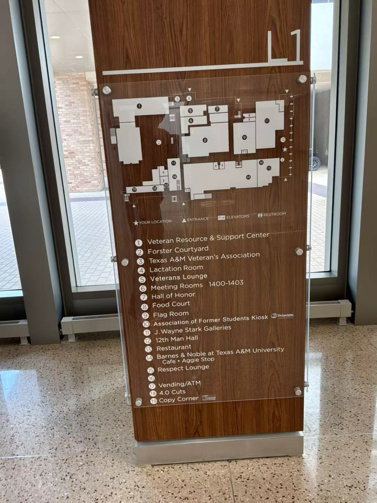
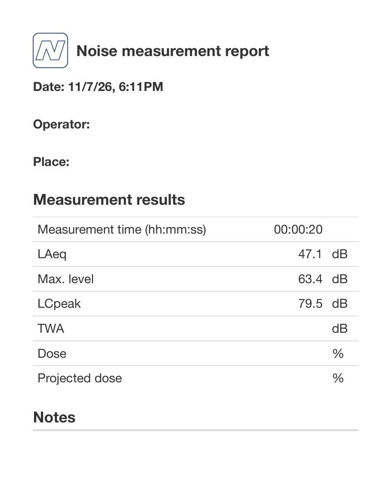
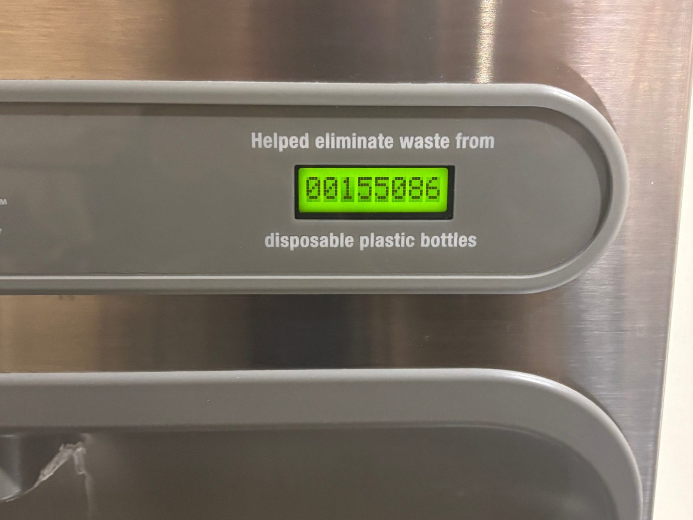
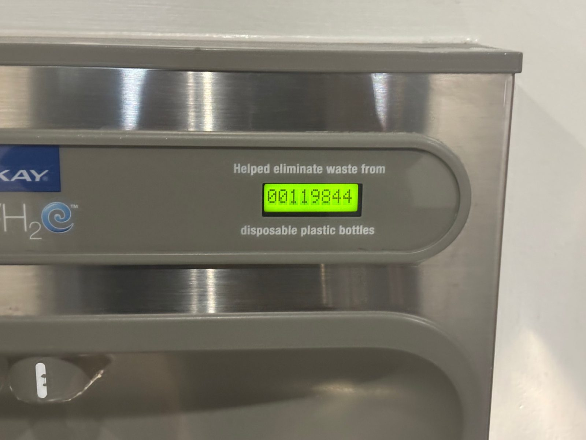
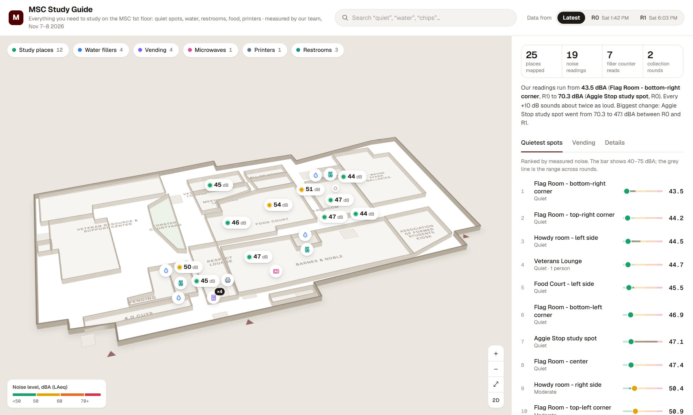
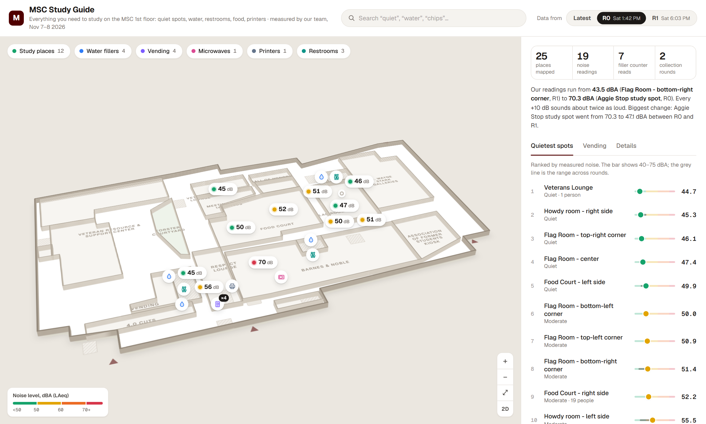
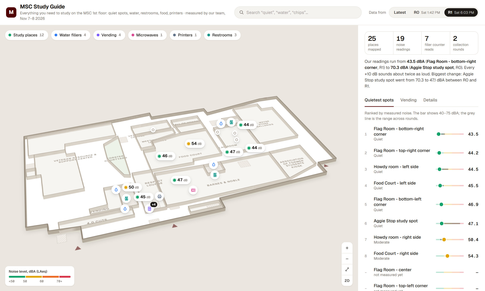
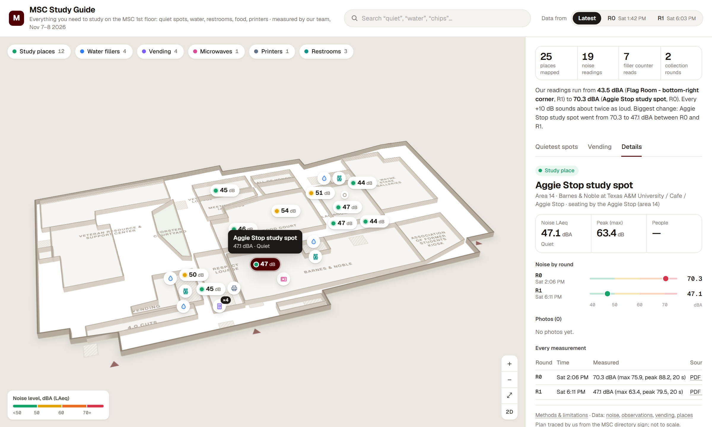
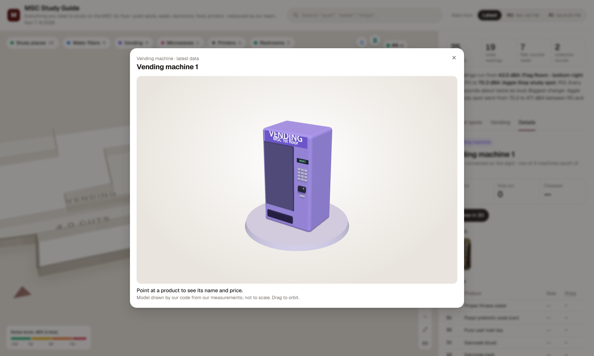
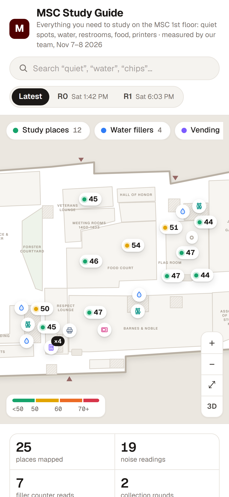

<!doctype html>
<html lang="en">
<head>
<meta charset="utf-8">
<title>MSC Study Guide: demo film</title>
<!-- Demo film for the MSC Study Guide. Style: "Bold-outline sticker explainer" (PaperClip look), following style 07 of
     mg-styles-15 by Vincentwei1021 (MIT): photo stickers with thick white outlines, flat icons, exact charts on one big
     canvas, one continuous camera. Every frame is a pure function of t: window.renderAt(t). Timing comes from the
     voiceover cue sheet (out/cues.json, made by voice.py). Data comes from our CSVs. -->
<link rel="preconnect" href="https://fonts.googleapis.com">
<link rel="preconnect" href="https://fonts.gstatic.com" crossorigin>
<link rel="stylesheet" href="https://fonts.googleapis.com/css2?family=Geist:wght@400;500;600;700;800;900&family=Geist+Mono:wght@500;700&display=block">
<style>
  :root { --bg: #e9eef2; --ink: #22303e; --ink2: #4a5a6a; --muted: #7d8b99; --line: #c9d3dc; --accent: #ff5a36; --maroon: #500000;
    --quiet: #16a36b; --moderate: #e2a400; --loud: #ec6b25; --vloud: #d7364a; --water: #2f7cf6; --vending: #7c5cff; --microwave: #db4b93; --printer: #64748b; --restroom: #0f9488; }
  * { box-sizing: border-box; }
  html, body { margin: 0; width: 1920px; height: 1080px; overflow: hidden; background: var(--bg); font-family: "Geist", system-ui, sans-serif; color: var(--ink); -webkit-font-smoothing: antialiased; }
  #frame { position: absolute; inset: 0; overflow: hidden; background: var(--bg); }
  #frame::before { content: ""; position: absolute; inset: 0; background-image: radial-gradient(circle, rgba(34,48,62,.10) 1.6px, transparent 1.8px); background-size: 36px 36px; background-position: var(--gx, 0) var(--gy, 0); }
  #world { position: absolute; left: 0; top: 0; width: 6400px; height: 4000px; transform-origin: 0 0; }
  .abs { position: absolute; }
  .el { position: absolute; will-change: transform, opacity; }
  .sticker { border: 12px solid #fff; border-radius: 22px; box-shadow: 0 2px 0 rgba(34,48,62,.08), 0 22px 44px rgba(34,48,62,.22); background: #fff; overflow: hidden; display: block; }
  .sticker img { display: block; width: 100%; height: 100%; object-fit: cover; }
  .h1 { font-weight: 900; letter-spacing: -.035em; line-height: .98; color: var(--ink); }
  .h2 { font-weight: 800; letter-spacing: -.025em; line-height: 1.05; }
  .cap { font-weight: 500; color: var(--ink2); }
  .mono { font-family: "Geist Mono", monospace; }
  .tag { display: inline-flex; align-items: center; gap: 12px; background: #fff; border-radius: 999px; padding: 12px 24px; font-weight: 700; font-size: 30px; box-shadow: 0 10px 24px rgba(34,48,62,.16); white-space: nowrap; }
  .tag i { width: 16px; height: 16px; border-radius: 50%; background: var(--c, var(--accent)); }
  .label { font-weight: 700; font-size: 32px; white-space: nowrap; }
  .label small { display: block; font-weight: 500; font-size: 22px; color: var(--muted); margin-top: 4px; }
  .stamp { border: 7px solid var(--accent); color: var(--accent); font-weight: 900; letter-spacing: .02em; padding: 10px 26px; border-radius: 14px; white-space: nowrap; background: rgba(255,255,255,.55); }
  .icon { filter: drop-shadow(0 10px 18px rgba(34,48,62,.2)); }
  svg.lines { position: absolute; left: 0; top: 0; overflow: visible; pointer-events: none; }
  .leader { fill: none; stroke: var(--ink); stroke-width: 3.5; stroke-linecap: round; }
  .dot { fill: var(--ink); }
  .num { font-weight: 900; letter-spacing: -.04em; font-variant-numeric: tabular-nums; line-height: 1; }
  .tile { background: #fff; border-radius: 28px; box-shadow: 0 18px 40px rgba(34,48,62,.14); padding: 34px 40px; }
  .bar-row { position: absolute; left: 0; height: 46px; display: flex; align-items: center; }
  .bar-name { position: absolute; right: calc(100% + 22px); font-size: 26px; font-weight: 600; white-space: nowrap; color: var(--ink); }
  .bar { height: 34px; border-radius: 0 10px 10px 0; background: var(--c); }
  .bar-val { margin-left: 14px; font-family: "Geist Mono", monospace; font-weight: 700; font-size: 26px; }
  #subs { position: absolute; left: 50%; bottom: 30px; transform: translateX(-50%); max-width: 1640px; width: max-content; text-align: center; font-size: 30px; font-weight: 600; line-height: 1.3; color: #fff; background: rgba(28,38,50,.86); padding: 12px 28px; border-radius: 14px; }
  #subs:empty { display: none; }
  #endcard { position: absolute; inset: 0; display: grid; place-items: center; text-align: center; pointer-events: none; }
  #vignette { position: absolute; inset: 0; pointer-events: none; background: radial-gradient(ellipse at 50% 45%, transparent 60%, rgba(34,48,62,.10)); }
</style>
</head>
<body>
<div id="frame">
  <div id="world"></div>
  <div id="vignette"></div>
  <div id="endcard"></div>
  <div id="subs"></div>
</div>
<script src="https://cdnjs.cloudflare.com/ajax/libs/PapaParse/5.4.1/papaparse.min.js"></script>
<script>
(() => {
'use strict';
const W = document.getElementById('world');
const clamp = (v, a = 0, b = 1) => Math.max(a, Math.min(b, v));
const lerp = (a, b, p) => a + (b - a) * p;
const ease = (t) => (t < .5 ? 4 * t * t * t : 1 - Math.pow(-2 * t + 2, 3) / 2);
const easeOut = (t) => 1 - Math.pow(1 - t, 3);
const back = (t) => { const c1 = 1.9, c3 = c1 + 1; return 1 + c3 * Math.pow(t - 1, 3) + c1 * Math.pow(t - 1, 2); };
let CUES = {}, TOTAL = 0, LINES = [];
const T = (spec) => { // "find2+1.2" -> seconds
  const m = String(spec).match(/^([a-z0-9]+)(?:([+-][\d.]+))?(@end)?$/i);
  if (!m) return Number(spec);
  const c = CUES[m[1]]; if (!c) return 0;
  return (m[3] ? c.end : c.start) + (m[2] ? parseFloat(m[2]) : 0);
};
function h(html) { const d = document.createElement('div'); d.innerHTML = html.trim(); return d.firstElementChild; }
// add an element at world (x, y) with an entrance: anim = pop | fade | rise | none
const ITEMS = [];
function add(html, x, y, at, opts = {}) {
  const el = h(html);
  el.classList.add('el');
  el.style.left = x + 'px'; el.style.top = y + 'px';
  if (opts.w) el.style.width = opts.w + 'px';
  if (opts.h) el.style.height = opts.h + 'px';
  W.appendChild(el);
  ITEMS.push({ el, at, anim: opts.anim || 'pop', rot: opts.rot || 0, dur: opts.dur || .55, out: opts.out, origin: opts.origin });
  if (opts.origin) el.style.transformOrigin = opts.origin;
  return el;
}
// SVG layer for leader lines / drawn paths in world coordinates
const SV = document.createElementNS('http://www.w3.org/2000/svg', 'svg');
SV.setAttribute('class', 'lines'); SV.setAttribute('width', 6400); SV.setAttribute('height', 4000);
const DRAWS = [];
function line(d, at, dur = .6, cls = 'leader', extra = {}) {
  const p = document.createElementNS('http://www.w3.org/2000/svg', 'path');
  p.setAttribute('d', d); p.setAttribute('class', cls); p.setAttribute('pathLength', 1);
  p.style.strokeDasharray = extra.dash ? extra.dash : '1 1';
  Object.entries(extra.attrs || {}).forEach(([k, v]) => p.setAttribute(k, v));
  SV.appendChild(p);
  DRAWS.push({ p, at, dur, dashed: !!extra.dash });
  return p;
}
function dotAt(x, y, at, r = 7, color) {
  const c = document.createElementNS('http://www.w3.org/2000/svg', 'circle');
  c.setAttribute('cx', x); c.setAttribute('cy', y); c.setAttribute('r', r); c.setAttribute('class', 'dot');
  if (color) c.style.fill = color;
  SV.appendChild(c); DRAWS.push({ p: c, at, dur: .3, dot: true, r });
}
const COUNTS = [];
function counter(el, at, to, dur = 1.4, fmt = (v) => Math.round(v).toLocaleString('en-US')) { COUNTS.push({ el, at, to, dur, fmt }); }
const BARS = [];
const SWAPS = []; // image swaps inside a sticker: [{img, at}]

/* ---------------- data ---------------- */
async function csv(url) { const t = await (await fetch(url)).text(); return Papa.parse(t.replace(/^/, ''), { header: true, skipEmptyLines: true }).data; }

async function build() {
  const cj = await (await fetch('out/cues.json', { cache: 'no-cache' })).json();
  cj.cues.forEach((c) => { CUES[c.id] = c; });
  LINES = cj.cues; TOTAL = cj.total;
  const [places, noise, obs, items] = await Promise.all([csv('../data/places.csv'), csv('../data/noise.csv'), csv('../data/observations.csv'), csv('../data/vending_items.csv')]);
  const byId = Object.fromEntries(places.map((p) => [p.place_id, p]));
  const N = noise.filter((n) => n.laeq_db).map((n) => ({ ...n, v: parseFloat(n.laeq_db), t: new Date(n.ts) }));
  const latest = {};
  N.forEach((n) => { if (!latest[n.place_id] || n.t > latest[n.place_id].t) latest[n.place_id] = n; });
  const band = (v) => (v < 50 ? 'quiet' : v < 60 ? 'moderate' : v < 70 ? 'loud' : 'vloud');
  const counters = obs.filter((o) => o.counter);
  const R = { places: places.length, noise: N.length, counters: counters.length, items: items.length };
  const quiet = [...N].sort((a, b) => a.v - b.v)[0], loud = [...N].sort((a, b) => b.v - a.v)[0];
  const AS = N.filter((n) => n.place_id === loud.place_id).sort((a, b) => a.t - b.t);
  // water: bottles between the two rounds, fillers with both readings
  const deltas = ['W-1', 'W-2', 'W-3', 'W-4'].map((id) => {
    const rs = counters.filter((o) => o.place_id === id).sort((a, b) => a.ts.localeCompare(b.ts));
    return rs.length > 1 ? { id, a: +rs[0].counter, b: +rs[rs.length - 1].counter, d: rs[rs.length - 1].counter - rs[0].counter } : null;
  }).filter(Boolean);
  const r0 = N.filter((n) => n.round === 'R0').sort((a, b) => a.t - b.t)[0], r1 = N.filter((n) => n.round === 'R1').sort((a, b) => a.t - b.t)[0];
  const clock = (d) => { let hh = d.getHours(); const mm = String(d.getMinutes()).padStart(2, '0'); const ap = hh >= 12 ? 'PM' : 'AM'; hh = hh % 12 || 12; return `${hh}:${mm} ${ap}`; };

  /* ===== 1. HOOK (centre 960,540) ===== */
  add(`<div class="sticker" style="width:520px;height:693px"></div>`, 150, 200, 'hook1+0.1', { rot: -5 });
  add(`<div class="tag" style="--c:var(--maroon)"><i></i>MSC · Texas A&amp;M · 1st floor</div>`, 250, 140, 'hook1+0.5', { rot: -3 });
  add(`<div class="h1" style="font-size:118px;width:1100px">Where can you<br>study in peace,<br><span style="color:var(--accent)">right now?</span></div>`, 800, 250, 'hook1+1.6', { anim: 'rise' });
  add(`<div class="stamp" style="font-size:46px">NOBODY HAD MEASURED IT.</div>`, 810, 700, 'hook2+2.2', { rot: -4 });
  add(`<div class="stamp" style="font-size:46px;background:var(--accent);color:#fff">SO WE DID.</div>`, 1440, 790, 'hook2+3.7', { rot: 5 });

  /* ===== 2. WALK (centre 3000,540): the floor outline drawn, our route, two rounds ===== */
  const svgText = await (await fetch('../assets/msc-floor1.svg')).text();
  const doc = new DOMParser().parseFromString(svgText, 'image/svg+xml');
  const S = .62, OX = 2160, OY = 80;  // plan px -> world
  const tr = (d) => d.replace(/(-?\d+(?:\.\d+)?)\s+(-?\d+(?:\.\d+)?)/g, (_, x, y) => `${(+x * S + OX).toFixed(1)} ${(+y * S + OY).toFixed(1)}`);
  const outline = doc.querySelector('.plan-outline').getAttribute('d');
  add(`<div class="h2" style="font-size:64px">Two rounds on Saturday</div>`, 2160, 120, 'walk+0', { anim: 'rise' });
  line(tr(outline), 'walk+0.2', 1.6, 'leader', { attrs: { 'stroke-width': 6, style: 'stroke:var(--ink)' } });
  doc.querySelectorAll('path.room').forEach((r, i) => line(tr(r.getAttribute('d')), `walk+${(0.8 + i * 0.05).toFixed(2)}`, .8, 'leader', { attrs: { 'stroke-width': 2.5, style: 'stroke:#9fb0bf' } }));
  const studyPts = places.filter((p) => p.layer === 'study').map((p) => [+p.x * S + OX, +p.y * S + OY]);
  const order = [...studyPts].sort((a, b) => a[0] - b[0]);
  line('M' + order.map((q) => q.join(' ')).join(' L'), 'walk+1.6', 2.2, 'leader', { dash: '0.012 0.012', attrs: { 'stroke-width': 5, style: 'stroke:var(--accent)' } });
  order.forEach((q, i) => dotAt(q[0], q[1], `walk+${(1.6 + i * 0.18).toFixed(2)}`, 11, 'var(--accent)'));
  add(`<div class="tile" style="padding:26px 34px"><div class="mono" style="font-size:26px;color:var(--muted)">ROUND R0</div><div class="h2" style="font-size:56px">Sat ${clock(r0.t)}</div></div>`, 3330, 300, 'walk+2.4', { rot: -3 });
  add(`<div class="tile" style="padding:26px 34px"><div class="mono" style="font-size:26px;color:var(--muted)">ROUND R1</div><div class="h2" style="font-size:56px">Sat ${clock(r1.t)}</div></div>`, 3420, 520, 'walk+4.4', { rot: 3 });

  /* ===== 3. NOISE (centre 5040,540): the NIOSH report sticker with leader labels ===== */
  add(`<div class="sticker" style="width:520px;height:663px"></div>`, 4300, 190, 'noise+0.1', { rot: 3 });
  add(`<div class="h2" style="font-size:60px;width:820px">20 seconds of sound<br>at every study spot</div>`, 4980, 170, 'noise+0.2', { anim: 'rise' });
  line('M 4770 560 C 4900 560 4940 470 5040 470', 'noise+1.4', .6); dotAt(4770, 560, 'noise+1.4');
  add(`<div class="label">00:00:20<small>measured per spot</small></div>`, 5060, 430, 'noise+1.8');
  line('M 4770 620 C 4930 640 4950 640 5040 640', 'noise+3.0', .6); dotAt(4770, 620, 'noise+3.0');
  add(`<div class="label" style="color:var(--accent)">LAeq = average level<small>what our map shows, in dBA</small></div>`, 5060, 600, 'noise+3.3');
  add(`<div class="tag" style="font-size:28px;--c:var(--ink)"><i></i>NIOSH Sound Level Meter app · PDF per reading</div>`, 4990, 800, 'noise+5.4', { rot: -2 });

  /* ===== 4. WATER + VENDING (row 2, x 3900..6300) ===== */
  const w1 = counters.filter((o) => o.place_id === 'W-1').sort((a, b) => a.ts.localeCompare(b.ts)).pop();
  add(`<div class="sticker" style="width:560px;height:420px"></div>`, 3980, 1560, 'water+0', { rot: -4 });
  add(`<div class="h2" style="font-size:54px">Water fillers</div>`, 3990, 1430, 'water+0.2', { anim: 'rise' });
  const wc = add(`<div class="num" style="font-size:92px;color:var(--water)">0</div>`, 4000, 2030, 'water+0.6', { anim: 'rise' });
  counter(wc, 'water+0.6', +w1.counter, 1.6);
  add(`<div class="cap" style="font-size:28px">bottles saved, read off the display</div>`, 4005, 2135, 'water+1.2', { anim: 'fade' });
  const vend = [['V-1', 'data/photos/V-1/bf0e076060ea36dc7ba6dac889cad382.jpg', 'Vending · 4 machines', 'vending', -3],
    ['M-1', 'data/photos/M-1/1b5451c5492d510e26c70e0022cbf436.jpg', 'Microwaves · 4', 'microwave', 4],
    ['P-1', 'data/photos/P-1/41dcfec46def8791ad81da38aabe1179.jpg', 'Printers · 1 of 3 out of order', 'printer', -2]];
  vend.forEach(([id, src, lab, c, rot], i) => {
    const x = 4760 + i * 520, y = 1520 + (i % 2) * 70;
    add(`<div class="sticker" style="width:420px;height:540px"></div>`, x, y, `vend+${(0.1 + i * 1.3).toFixed(1)}`, { rot });
    add(`<div class="tag" style="--c:var(--${c});font-size:26px"><i></i>${lab}</div>`, x + 10, y + 560, `vend+${(0.5 + i * 1.3).toFixed(1)}`, { rot: rot / 2 });
  });
  add(`<div class="tag" style="--c:var(--vending);font-size:28px"><i></i>${R.items} products typed up from our photos</div>`, 5000, 1400, 'vend+3.6', { rot: 2 });

  /* ===== 5. DATA (centre 3000,1900) ===== */
  add(`<div class="h2" style="font-size:64px">Small, but every number is real</div>`, 2120, 1440, 'data+0', { anim: 'rise' });
  [[R.places, 'places on the map', 'var(--maroon)'], [R.noise, 'noise readings', 'var(--quiet)'], [R.counters, 'counter reads', 'var(--water)'], [R.items, 'vending products', 'var(--vending)']].forEach(([v, l, c], i) => {
    const x = 2120 + (i % 2) * 440, y = 1590 + Math.floor(i / 2) * 300;
    const el = add(`<div class="tile" style="width:400px;height:260px"><div class="num" style="font-size:130px;color:${c}">0</div><div class="cap" style="font-size:30px;margin-top:12px">${l}</div></div>`, x, y, `data+${(1.6 + i * 1.1).toFixed(1)}`, { rot: [-2, 1.5, 1, -1.5][i] });
    counter(el.querySelector('.num'), `data+${(1.6 + i * 1.1).toFixed(1)}`, v, 1.0);
  });
  // source links
  line('M 2990 1720 C 3120 1720 3160 1640 3290 1640', 'source+0.4', .6); dotAt(2990, 1720, 'source+0.4');
  add(`<div class="sticker" style="width:250px;height:318px;border-width:9px"></div>`, 3310, 1500, 'source+0.6', { rot: 4 });
  line('M 2990 2020 C 3120 2020 3160 2110 3290 2110', 'source+1.4', .6); dotAt(2990, 2020, 'source+1.4');
  add(`<div class="sticker" style="width:300px;height:225px;border-width:9px"></div>`, 3310, 1990, 'source+1.6', { rot: -3 });
  add(`<div class="stamp" style="font-size:40px">NOTHING SIMULATED</div>`, 3330, 2270, 'source+3.2', { rot: -5 });

  /* ===== 6. FINDINGS chart (centre 960,1900): latest LAeq per spot, bars to scale 40-75 dBA ===== */
  add(`<div class="h2" style="font-size:60px">How loud is each study spot? <span style="color:var(--muted);font-weight:600;font-size:40px">latest LAeq, dBA</span></div>`, 120, 1400, 'find1-0.4', { anim: 'rise' });
  const rows = Object.values(latest).sort((a, b) => a.v - b.v);
  const BX = 600, BY = 1530, PX = 1500 / 35;  // 40..75 dBA over 1000 px
  rows.forEach((n, i) => {
    const name = byId[n.place_id].name.replace(' - ', ' · ');
    const row = add(`<div class="bar-row" style="top:0;--c:var(--${band(n.v)})"><span class="bar-name">${name}</span><span class="bar" style="width:0"></span><span class="bar-val">${n.v.toFixed(1)}</span></div>`, BX, BY + i * 58, `find1+${(0.2 + i * 0.08).toFixed(2)}`, { anim: 'fade', dur: .3 });
    BARS.push({ el: row.querySelector('.bar'), at: `find1+${(0.2 + i * 0.08).toFixed(2)}`, w: (n.v - 40) * PX });
    if (i === 0) add(`<div class="tag" style="--c:var(--quiet);font-size:28px"><i></i>quietest: ${n.v.toFixed(1)} dBA</div>`, BX + (n.v - 40) * PX + 150, BY + i * 58 - 6, 'find1+2.2', { rot: -2 });
  });
  // axis
  [40, 50, 60, 70].forEach((v) => add(`<div class="mono" style="font-size:22px;color:var(--muted)">${v}</div>`, BX + (v - 40) * PX - 12, BY + rows.length * 58 + 6, 'find1+0.6', { anim: 'fade' }));
  line(`M ${BX} ${BY - 12} L ${BX} ${BY + rows.length * 58}`, 'find1+0.1', .5, 'leader', { attrs: { 'stroke-width': 3 } });

  /* ===== 7. AGGIE STOP change + "10 dB = twice as loud" (centre 960,3260) ===== */
  const a0 = AS[0], a1 = AS[AS.length - 1];
  add(`<div class="h2" style="font-size:60px">${byId[loud.place_id].name}</div>`, 140, 2830, 'find2+0', { anim: 'rise' });
  const DX = 160, DY = 3120, DPX = 1500 / 35;
  line(`M ${DX} ${DY} L ${DX + 1500} ${DY}`, 'find2+0.2', .8, 'leader', { attrs: { 'stroke-width': 10, style: 'stroke:#d3dce4' } });
  [40, 50, 60, 70].forEach((v) => add(`<div class="mono" style="font-size:24px;color:var(--muted)">${v} dBA</div>`, DX + (v - 40) * DPX - 30, DY + 40, 'find2+0.4', { anim: 'fade' }));
  add(`<div style="width:56px;height:56px;border-radius:50%;background:var(--vloud);border:8px solid #fff;box-shadow:0 8px 18px rgba(0,0,0,.2)"></div>`, DX + (a0.v - 40) * DPX - 28, DY - 28, 'find2+0.9');
  add(`<div class="label" style="text-align:center;transform-origin:50% 100%"><span class="num" style="font-size:64px;color:var(--vloud)">${a0.v.toFixed(1)}</span><small>Sat ${clock(a0.t)}</small></div>`, DX + (a0.v - 40) * DPX - 80, DY - 175, 'find2+1.1');
  line(`M ${DX + (a0.v - 40) * DPX - 40} ${DY} L ${DX + (a1.v - 40) * DPX + 40} ${DY}`, 'find2+3.2', 1.2, 'leader', { attrs: { 'stroke-width': 10, style: 'stroke:var(--accent)', 'marker-end': 'url(#arrow)' } });
  add(`<div style="width:56px;height:56px;border-radius:50%;background:var(--quiet);border:8px solid #fff;box-shadow:0 8px 18px rgba(0,0,0,.2)"></div>`, DX + (a1.v - 40) * DPX - 28, DY - 28, 'find2+4.3');
  add(`<div class="label" style="text-align:center"><span class="num" style="font-size:64px;color:var(--quiet)">${a1.v.toFixed(1)}</span><small>Sat ${clock(a1.t)}</small></div>`, DX + (a1.v - 40) * DPX - 80, DY - 175, 'find2+4.5');
  add(`<div class="stamp" style="font-size:42px">−${(a0.v - a1.v).toFixed(1)} dB</div>`, DX + ((a0.v + a1.v) / 2 - 40) * DPX - 110, DY + 110, 'find2+5.2', { rot: -3 });
  // loudness doubling
  add(`<div class="tile" style="width:1500px;padding:30px 40px"><div class="h2" style="font-size:50px">+10 dB ≈ <span style="color:var(--accent)">twice as loud</span></div></div>`, 160, 3420, 'find3+0', { rot: -1 });
  add(`<div class="cap" style="font-size:34px;font-weight:600">When you go matters as much as where.</div>`, 200, 3560, 'find3+2.3', { anim: 'rise' });

  /* ===== 8. WATER usage (centre 3000,3260) ===== */
  add(`<div class="h2" style="font-size:60px">Bottles filled, ${clock(new Date(counters.filter((o) => o.round === 'R0')[0].ts))} → ${clock(new Date(counters.filter((o) => o.round === 'R1')[0].ts))}</div>`, 2140, 2840, 'find4+0', { anim: 'rise' });
  deltas.forEach((d, i) => {
    const x = 2200 + i * 520;
    add(`<svg class="icon" width="170" height="210" viewBox="0 0 24 30"><path d="M12 2c4.6 5.7 9 10.4 9 15.4a9 9 0 0 1-18 0C3 12.4 7.4 7.7 12 2z" fill="var(--water)" stroke="#fff" stroke-width="1.4"/></svg>`, x + 60, 3000, `find4+${(0.6 + i * 0.5).toFixed(1)}`);
    const n = add(`<div class="num" style="font-size:96px;color:var(--ink);text-align:center;width:290px">+0</div>`, x, 3240, `find4+${(0.8 + i * 0.5).toFixed(1)}`, { anim: 'rise' });
    counter(n, `find4+${(0.8 + i * 0.5).toFixed(1)}`, d.d, 0.8, (v) => '+' + Math.round(v));
    add(`<div class="cap mono" style="font-size:24px;text-align:center;width:290px">Filler ${d.id.slice(2)} · ${d.a.toLocaleString('en-US')} → ${d.b.toLocaleString('en-US')}</div>`, x, 3350, `find4+${(1.0 + i * 0.5).toFixed(1)}`, { anim: 'fade' });
  });
  add(`<div class="stamp" style="font-size:44px">${deltas.reduce((s, d) => s + d.d, 0)} BOTTLES IN ~4 HOURS</div>`, 2420, 3460, 'find4+3.0', { rot: -3 });

  /* ===== 9. APP (centre 5040,3260) ===== */
  const app = add(`<div class="sticker" style="width:1480px;height:888px;border-width:14px"></div>`, 4300, 2800, 'app1+0', { rot: -1 });
  app.querySelectorAll('img').forEach((im) => { im.style.position = 'absolute'; im.style.inset = '0'; });
  SWAPS.push({ box: app, steps: [['3d', 'app1+0'], ['r0', 'app2+0.2'], ['r1', 'app2+1.6'], ['detail', 'app2+3.2'], ['v3d', 'app3+0']] });
  add(`<div class="tag" style="--c:var(--maroon);font-size:34px"><i></i>MSC Study Guide</div>`, 4180, 2800, 'app1+0.5', { rot: -4 });
  add(`<div class="tag" style="--c:var(--quiet);font-size:28px"><i></i>noise per spot, in dBA</div>`, 5560, 3010, 'app1+3.5', { rot: 3 });
  add(`<div class="tag" style="--c:var(--restroom);font-size:28px"><i></i>water · restrooms · food</div>`, 5560, 3130, 'app1+5.6', { rot: -2 });
  add(`<div class="tag" style="--c:var(--ink);font-size:28px"><i></i>switch rounds: R0 → R1</div>`, 5560, 2860, 'app2+0.2', { rot: 3 });
  add(`<div class="sticker" style="width:270px;height:584px;border-width:10px;border-radius:30px"></div>`, 5700, 3000, 'app3+1.2', { rot: 5 });

  /* ===== END card ===== */
  const ec = document.getElementById('endcard');
  ec.innerHTML = `<div id="endinner"><div class="tag" style="--c:var(--maroon);font-size:30px;margin-bottom:34px"><i></i>TAMU Datathon 2026 · Build-A-Dataset</div>
    <div class="h1" style="font-size:170px">MSC Study Guide</div>
    <div class="cap" style="font-size:40px;margin-top:26px;font-weight:600">Aggie Map tells you <b>where</b>. We tell you <b style="color:var(--accent)">which one, right now.</b></div>
    <div class="mono" style="font-size:24px;color:var(--muted);margin-top:30px">Quiet spots · water · restrooms · food · printers — measured in person, MSC 1st floor</div></div>`;

  // arrow marker
  SV.insertAdjacentHTML('afterbegin', '<defs><marker id="arrow" viewBox="0 0 10 10" refX="5" refY="5" markerWidth="3" markerHeight="3" orient="auto"><path d="M0 0 L10 5 L0 10 z" fill="#ff5a36"/></marker></defs>');
  W.prepend(SV);
  ITEMS.forEach((it) => { it.t0 = T(it.at); });
  DRAWS.forEach((d) => { d.t0 = T(d.at); });
  COUNTS.forEach((c) => { c.t0 = T(c.at); });
  BARS.forEach((b) => { b.t0 = T(b.at); });
  SWAPS.forEach((s) => { s.steps = s.steps.map(([k, at]) => [k, T(at)]); });
  await Promise.all([...document.images].map((im) => im.decode().catch(() => {})));
  await document.fonts.ready;
}

/* ---------------- camera ---------------- */
const SHOTS = [
  ['hook1', 960, 560, 1.06], ['hook2', 1020, 540, 1.0],
  ['walk', 3000, 560, 1.0], ['noise', 5040, 560, 1.0],
  ['water', 4560, 1860, 1.08], ['vend', 5380, 1880, 0.88],
  ['data', 2780, 1920, 1.0], ['source', 2960, 1940, 0.95],
  ['find1', 960, 1920, 0.98], ['find2', 960, 3150, 0.98], ['find3', 960, 3300, 0.98],
  ['find4', 3000, 3220, 1.0],
  ['app1', 5040, 3290, 0.84], ['app2', 5060, 3290, 0.84], ['app3', 5160, 3290, 0.83],
  ['end', 3200, 2000, 0.3]
];
function camera(t) {
  let i = 0;
  for (let k = 0; k < SHOTS.length; k++) if (t >= T(SHOTS[k][0]) - 0.45) i = k;
  const cur = SHOTS[i], prev = SHOTS[Math.max(0, i - 1)];
  const ts = T(cur[0]) - 0.45, dur = cur[0] === 'end' ? 1.8 : 1.15;
  const p = i === 0 ? 1 : ease(clamp((t - ts) / dur));
  // a long, gentle push-in while a shot holds
  const hold = Math.max(0, t - ts - dur), drift = 1 + Math.min(hold, 10) * 0.004;
  return [lerp(prev[1], cur[1], p), lerp(prev[2], cur[2], p), lerp(prev[3], cur[3], p) * (cur[0] === 'end' ? 1 : drift)];
}

/* ---------------- render ---------------- */
window.renderAt = (t) => {
  const [x, y, z] = camera(t);
  W.style.transform = `translate(${960 - x * z}px, ${540 - y * z}px) scale(${z})`;
  document.getElementById('frame').style.setProperty('--gx', `${(960 - x * z) % 36}px`);
  document.getElementById('frame').style.setProperty('--gy', `${(540 - y * z) % 36}px`);
  ITEMS.forEach((it) => {
    const p = clamp((t - it.t0) / it.dur);
    const e = it.el;
    if (p <= 0) { e.style.opacity = 0; e.style.transform = `rotate(${it.rot}deg) scale(.6)`; return; }
    if (it.anim === 'pop') { e.style.opacity = clamp(p * 4); e.style.transform = `rotate(${it.rot * (0.4 + 0.6 * easeOut(p))}deg) scale(${0.55 + 0.45 * back(p)})`; }
    else if (it.anim === 'rise') { const q = easeOut(p); e.style.opacity = q; e.style.transform = `translateY(${(1 - q) * 40}px) rotate(${it.rot}deg)`; }
    else { e.style.opacity = easeOut(p); e.style.transform = `rotate(${it.rot}deg)`; }
  });
  DRAWS.forEach((d) => {
    const p = clamp((t - d.t0) / d.dur);
    if (d.dot) { d.p.setAttribute('r', (d.r * back(p)).toFixed(2)); d.p.style.opacity = p > 0 ? 1 : 0; return; }
    if (d.dashed) { d.p.style.opacity = p > 0 ? 1 : 0; d.p.style.clipPath = `inset(0 ${(100 - easeOut(p) * 100).toFixed(2)}% 0 0)`; return; }
    d.p.style.strokeDashoffset = (1 - ease(p)).toFixed(4);
    d.p.style.opacity = p > 0 ? 1 : 0;
  });
  COUNTS.forEach((c) => { const p = easeOut(clamp((t - c.t0) / c.dur)); c.el.textContent = c.fmt(c.to * p); });
  BARS.forEach((b) => { b.el.style.width = (b.w * easeOut(clamp((t - b.t0) / .7))).toFixed(1) + 'px'; });
  SWAPS.forEach((s) => {
    let k = s.steps[0][0], kp = null, since = 99;
    s.steps.forEach(([key, at], i) => { if (t >= at) { kp = i ? s.steps[i - 1][0] : null; k = key; since = t - at; } });
    s.box.querySelectorAll('img').forEach((im) => {
      const on = im.dataset.k === k, was = im.dataset.k === kp;
      im.style.opacity = on ? clamp(since / .35) : was ? 1 : 0;
      im.style.zIndex = on ? 2 : 1;
    });
  });
  // end card
  const te = T('end'), pe = clamp((t - te - 0.6) / .8);
  const ec = document.getElementById('endcard');
  ec.style.opacity = pe;
  ec.style.background = `rgba(233,238,242,${0.86 * pe})`;
  const inner = document.getElementById('endinner');
  if (inner) inner.style.transform = `translateY(${(1 - easeOut(pe)) * 40}px) scale(${1 + Math.max(0, t - te - 1.4) * 0.006})`;
  // subtitles
  const line = LINES.find((c) => t >= c.start - 0.05 && t <= c.end + 0.25);
  const subs = document.getElementById('subs');
  const txt = line && line.id !== 'end' ? line.text : '';
  if (subs.textContent !== txt) subs.textContent = txt;
};
window.FILM = { ready: build().then(() => { window.renderAt(0); return { total: TOTAL }; }) };
})();
</script>
</body>
</html>
